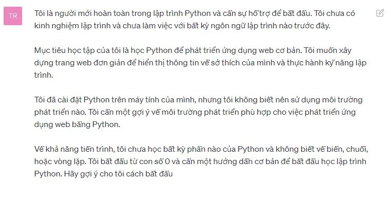
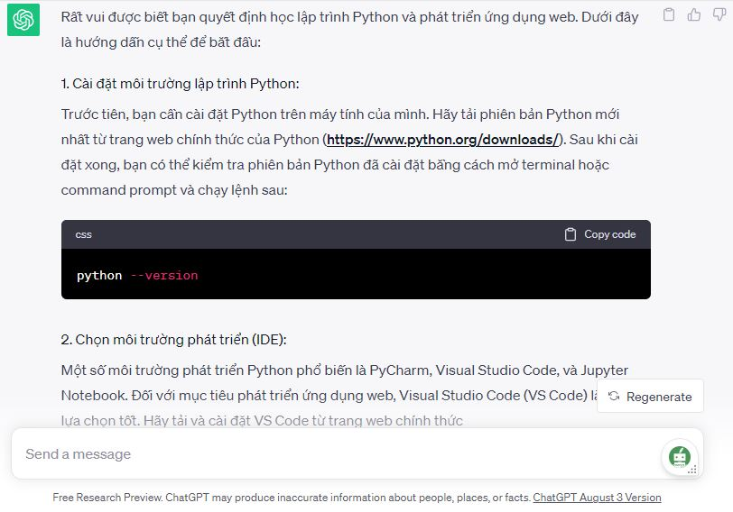

Hướng dẫn cách sử dụng ChatGPT hiệu quả giúp bạn X2 năng lực học tập
ChatGPT là một chatbot được phát triển bởi OpenAI, sử dụng mô hình ngôn ngữ lớn được đào tạo trên một tập dữ liệu khổng lồ gồm văn bản và mã. ChatGPT có thể được sử dụng cho nhiều mục đích khác nhau. Tuy nhiên, bạn đã thật sự biết cách sử dụng ChatGPT hiệu quả để phục vụ cho việc học tập và làm việc của mình chưa?
1. Những ứng dụng về cách sử dụng ChatGPT:
ChatGPT là một công cụ mạnh mẽ có thể được sử dụng cho nhiều mục đích khác nhau. Bằng cách hiểu rõ về các tính năng và khả năng của ChatGPT, bạn có thể sử dụng nó một cách hiệu quả để đạt được các mục tiêu của mình. Dưới đây là một số ứng dụng khi sử dụng ChatGPT thông dụng nhất:
- Trò chuyện với mọi người: ChatGPT có thể trở thành một người bạn trò chuyện thú vị. Hãy hỏi ChatGPT về sở thích của nó, suy nghĩ của nó hoặc bất cứ điều gì bạn muốn.
- Tạo văn bản: ChatGPT có thể được sử dụng để tạo văn bản cho nhiều mục đích khác nhau, bao gồm viết email, bài viết, thậm chí cả tiểu thuyết. Hãy cung cấp cho ChatGPT thông tin và hướng dẫn chi tiết để nó có thể tạo ra văn bản chất lượng cao.
- Dịch ngôn ngữ: ChatGPT có thể dịch giữa hơn 26 ngôn ngữ. Hãy cung cấp cho ChatGPT văn bản gốc và ngôn ngữ mục tiêu để nó có thể dịch văn bản một cách chính xác.
- Viết mã: ChatGPT có thể viết mã cho nhiều ngôn ngữ lập trình khác nhau. Hãy cung cấp cho ChatGPT thông tin chi tiết về loại mã bạn muốn tạo để nó có thể viết mã chính xác.
- Viết các loại nội dung sáng tạo khác: ChatGPT có thể tạo ra các loại nội dung sáng tạo khác, chẳng hạn như thơ, mã, kịch bản, tác phẩm âm nhạc, email, thư, v.v. Hãy cung cấp cho ChatGPT thông tin và hướng dẫn chi tiết để nó có thể tạo ra nội dung chất lượng cao.
2. Hiểu cách hoạt động của ChatGPT
Trước tiên, bạn nên hiểu cách mô hình ChatGPT hoạt động. Đây là một mô hình học máy được huấn luyện để đoán tiếp theo của văn bản dựa trên thông tin bạn cung cấp. Hãy chắc chắn rằng bạn đã hiểu rõ ràng về mục đích của bạn khi sử dụng ChatGPT.
Ví dụ: Trước khi bắt đầu tự học một chủ đề mới, hãy tìm hiểu về cách hoạt động của nó. Ví dụ, nếu bạn muốn tự học lập trình Python, bạn nên tìm hiểu về cú pháp cơ bản và nguyên tắc hoạt động của ngôn ngữ này trước.
3. Cung cấp thông tin đầy đủ và chi tiết
ChatGPT sẽ cần nhiều thông tin để tạo ra đầu ra chất lượng. Hãy cung cấp cho ChatGPT thông tin đầy đủ và chi tiết để nó có thể hiểu yêu cầu của bạn.
Ví dụ: Khi bạn cần hỗ trợ trong việc học lập trình Python, thay vì chỉ hỏi "Làm thế nào để học Python?" hãy cung cấp thông tin cụ thể như:
- Trình độ hiện tại: Bạn có kinh nghiệm lập trình trước đây hay không? Nếu có, bạn đã làm việc với ngôn ngữ lập trình nào?
- Mục tiêu học tập: Bạn muốn sử dụng Python cho mục đích gì? Ví dụ: phát triển ứng dụng web, xử lý dữ liệu, hoặc thậm chí là trí tuệ nhân tạo?
- Nền tảng và công cụ: Bạn đã cài đặt Python trên máy tính chưa? Nếu có, bạn sử dụng môi trường phát triển nào (ví dụ: PyCharm, Visual Studio Code)?
- Khả năng tiến trình: Bạn đã học qua phần nào của Python? Đã biết về biến, chuỗi, hoặc vòng lặp chưa?

Với thông tin đầy đủ và chi tiết như vậy, ChatGPT có thể tạo ra hướng dẫn cụ thể hơn, đề xuất tài liệu học tập phù hợp với trình độ của bạn, và giúp bạn tiến bộ một cách hiệu quả trong hành trình học lập trình Python của mình.

4. Đặt câu hỏi cụ thể
Để nhận được câu trả lời chính xác và hữu ích từ ChatGPT, hãy đặt câu hỏi cụ thể và rõ ràng. Tránh việc sử dụng câu hỏi mập mờ hoặc không rõ ràng, vì điều này có thể dẫn đến kết quả không mong muốn. Tránh sử dụng các từ lóng, viết tắt hoặc ngôn ngữ không chính xác.
Bạn cũng nên tránh hỏi những câu hỏi quá rộng hoặc mở khiến câu trả lời không sát như mong muốn.
Ví dụ: Thay vì hỏi "Làm thế nào để học lập trình hiệu quả?" bạn có thể đặt câu hỏi cụ thể như "Làm thế nào để hiểu rõ về vòng lặp trong Python?"
5. Sử dụng lệnh điều khiển
ChatGPT cung cấp các lệnh điều khiển để kiểm soát cách mô hình phản hồi. Ví dụ, bạn có thể sử dụng lệnh "Bạn có thể giải thích thêm không?" để yêu cầu mô hình giải thích chi tiết hơn về câu trả lời của nó.
Ngoài ra, bạn cũng có thể sử dụng lệnh "Có thể giới thiệu về các tài liệu học lập trình Python không?" để yêu cầu mô hình gợi ý các nguồn học cụ thể và sách liên quan đến Python.
Đôi khi, với phiên bản miễn phí, bạn có thể gặp tình trạng câu trả lời của ChatGPT bị ngắt ngừng hoặc không chạy tiếp. Khi đó, bạn hãy dùng các lệnh ngắn như: “tiếp tục”, “continue”, “viết tiếp”, “tôi muốn thêm thông tin”, “keep going”...
6. Kiểm tra và chỉnh sửa kết quả
Khi bạn nhận được câu trả lời từ ChatGPT, hãy luôn kiểm tra và chỉnh sửa nếu cần thiết. Mô hình có thể tạo ra kết quả không hoàn hảo, và việc kiểm tra và cải thiện chúng là quá trình quan trọng để đảm bảo tính chính xác và độ tin cậy.
Ví dụ: Sau khi ChatGPT cung cấp một đoạn văn bản về lập trình Python, hãy đọc kỹ và kiểm tra xem liệu nó còn thiếu sót hay không. Bạn có thể thêm ví dụ cụ thể để làm cho nó dễ hiểu hơn.
Hãy Bình luận về đầu ra của ChatGPT vì ChatGPT có thể học hỏi từ phản hồi của bạn. Nếu bạn thích đầu ra của ChatGPT, hãy cho ChatGPT biết. Nếu bạn không thích đầu ra của ChatGPT, hãy cung cấp cho ChatGPT phản hồi để nó có thể cải thiện.
7. Sử dụng ví dụ và dữ liệu cụ thể
Khi cần, cung cấp ví dụ hoặc dữ liệu cụ thể để làm rõ yêu cầu của bạn. Điều này giúp ChatGPT hiểu rõ hơn về vấn đề bạn đang đề cập và cung cấp câu trả lời chính xác hơn.
Ví dụ: Khi nghiên cứu một thuật ngữ khái quát như "hàm trong lập trình," hãy sử dụng ví dụ cụ thể về việc viết hàm tính tổng các số trong Python để làm rõ khái niệm.
8. Tinh chỉnh và cá nhân hóa
Nếu bạn đang học lập trình web và sử dụng ChatGPT, bạn có thể tinh chỉnh mô hình để tạo ra các hướng dẫn và ví dụ liên quan đến công nghệ web như HTML, CSS và JavaScript để phù hợp với mục tiêu học tập của bạn.
Như vậy, bài viết trên đây đã hướng dẫn bạn cách sử dụng ChatGPT hiệu quả. Hãy thử nghiệm và thích nghi với cách tương tác dựa sự hiểu biết và sáng tạo của bạn để tận dụng tối đa khả năng của mô hình này và giúp bạn đạt được mục tiêu của mình một cách nhanh chóng và dễ dàng nhé!


Viết bình luận (Cancel Reply)